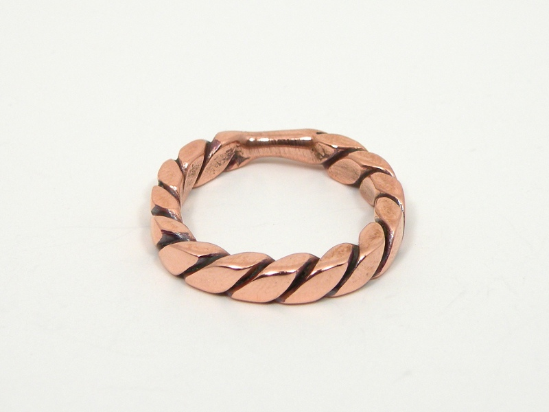
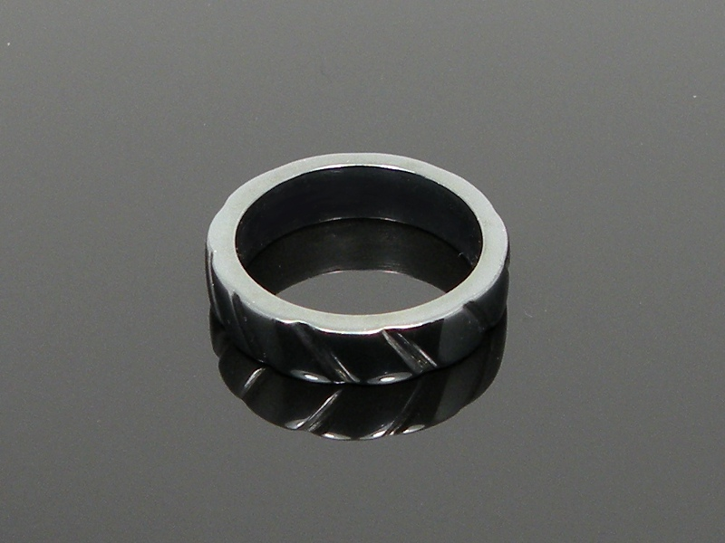

Rings Rings
Rings RingsI am not a fan of rings myself (I think nobody who routinely uses powertools is very fond of the idea) however I have made a few for others. The copper ring below grew out of the same tinkering with recycled electrical wire as many of my bracelets.
This copper ring took many steps to make: first I annealed and twisted the wire, then hammered it square, bent the ring into shape, cut the wire, and finally I welded the ends together and polished.
As with my bracelets, after working with copper, I experimented with steel which is always easy to lay my hands on.
The steel ring was made from a piece of ridgid electrical conduit, cut, carved, polished, and blued. The bluing on this piece is a bit different from that on some of my other steel jewelry. The ring was heated to a dull red and kept at that temperature for a short time, to incite a greater degree of oxidation than would otherwise grow. Afterwards, I polished the dull grey coating to achieve a look much like hematite, and indeed, it is chemically very similar. This thicker oxide layer is very hard and smooth, and more resistant to chemical attack than normal heat bluing, however, it is also brittle; it is more likely to chip than to scratch.
Created by Sean Corron, April 2, 2011.